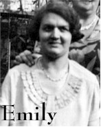

|  |
Emily (Garnett) Goff (1902-1978)
Emily Garnett was born on 12 April 1902 in Wallingfen, Howden to Robert Garnett and Emily Garnett (formerly Olive). Her Mother died in Childbirth. Emily went into service at the age of 14 to Saxleby in Hull. She also worked for Canon Buchanon in Hornsea. Canon Buchanan eventually retired to the Lake Disrict. Emily married Robert Wilfred Goff (Wilf) on 2 July 1938 in Hull Register Office. Emily died on 21 October 1978 in Cark in Cartmel whilst staying with Beryl.
|